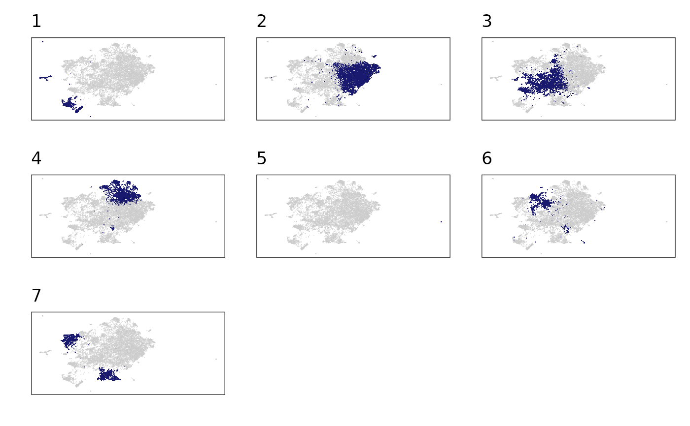

Create static plots for each level of a grouping variable.
Source:R/ls_plot_group_facet.R
ls_plot_group_facet.RdFor each level of the grouping variable you'll receive a plot with that level highlighted and every other post not highlighted.
Usage
ls_plot_group_facet(
df,
x_var = V1,
y_var = V2,
group_var,
nrow = 3,
fill_colour = "blue",
output = c("wrapped_plots", "list_of_plots", "wrapped_and_list")
)Arguments
- df
Data Frame or Tibble object
- x_var
The variable containing x-coordinates
- y_var
The variable containing y-coordinates
- group_var
The grouping variable to iteratively highlight
- nrow
How many rows the all-plots-wrapped version should have
- fill_colour
The colour for the highlighted variable
- output
Whether to return one plot with all levels of grouping variable, separate plots or the wrapped version and the separate plots in a nested list.
Examples
df <- ls_example
df %>% ls_plot_group_facet(group_var = cluster, fill_colour = "midnightblue", nrow = 3)
